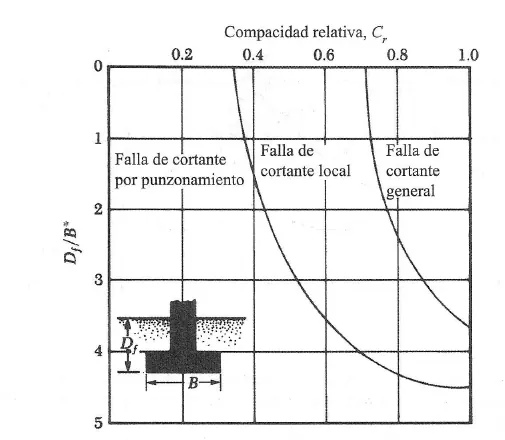
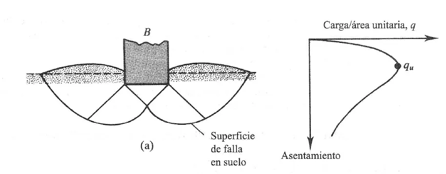

Cimentaciones#
Importante
Objetivos de aprendizaje
Diferenciar los tipos de cimentaciones superficiales y profundas, y los criterios para elegirlas.
Reconocer los modos de falla por capacidad portante.
Calcular la capacidad de carga última y admisible con las ecuaciones de Terzaghi y la ecuación general.
Considerar el efecto del nivel freático, de la excentricidad y de las condiciones no drenadas.
Estimar la capacidad de pilotes y los asentamientos inmediatos.
Definición y criterios de diseño#
La cimentación es la parte inferior de una estructura cuya función es transferir la carga al suelo o a la roca sobre la que descansa. El suelo puede verse como una prolongación de la estructura, generalmente la parte menos resistente y más deformable, de modo que la cimentación debe repartir y transmitir al terreno presiones compatibles con su resistencia y su deformabilidad. El diseño de una cimentación debe cumplir tres criterios: que el factor de seguridad entre la resistencia del suelo y las presiones transmitidas sea adecuado, de modo que no ocurra una falla por corte; que los asentamientos totales y diferenciales sean tolerables para la estructura; y que la construcción no afecte a las edificaciones vecinas.
Tipos de cimentaciones#
Cuando el suelo tiene resistencia adecuada a poca profundidad se usan cimentaciones superficiales o directas, que reparten las cargas en un plano horizontal cercano a la superficie, con una relación entre la profundidad de desplante y el ancho \(D_f/B\le1\). Las zapatas aisladas soportan columnas individuales; las zapatas corridas soportan muros o hileras de columnas; y las losas de cimentación cubren toda el área de la estructura y se usan cuando las cargas son altas o el suelo es débil, o para reducir los asentamientos diferenciales.
Cuando los estratos superficiales no tienen la competencia suficiente, se usan cimentaciones profundas que transmiten la carga a estratos más resistentes. Los pilotes son elementos esbeltos de madera, concreto o acero que transmiten la carga por punta, apoyándose en un estrato firme, o por fricción a lo largo del fuste en suelos cohesivos. Las pilas o caissons son elementos de mayor diámetro excavados y fundidos en el sitio.
Capacidad de carga#
Cuando una cimentación transmite carga al terreno se producen asentamientos. Si la carga aumenta lo suficiente se forman en el suelo superficies de falla a lo largo de las cuales se supera la resistencia al corte, y se produce el colapso: es la falla por capacidad portante. La carga que la produce depende de la resistencia al corte del suelo, de su peso unitario, de las dimensiones y la forma de la cimentación, de la profundidad de desplante y de la posición del nivel freático. No es una propiedad intrínseca del suelo sino de la interacción entre el suelo y la cimentación.
Modos de falla#
Vesic [1973] describió tres modos de falla. La falla por cortante general ocurre en arenas densas y arcillas rígidas: es súbita y catastrófica, con superficies de falla bien definidas que llegan a la superficie y producen levantamiento del terreno a los lados. La falla por cortante local ocurre en arenas medias a sueltas y en arcillas blandas: la superficie de falla solo está bien definida bajo la zapata. La falla por punzonamiento ocurre en arenas muy sueltas y suelos cohesivos blandos: la cimentación se hunde verticalmente con movimientos repentinos, sin que se formen superficies de falla visibles. El modo depende de la compacidad relativa del suelo y de la relación \(D_f/B\).


Figura 43 Modos de falla en función de la densidad relativa y de la profundidad relativa. Fuente: Vesic (1973).#
Teoría de Terzaghi#
Terzaghi (1943) extendió la solución de Prandtl para una cimentación corrida, rugosa y superficial, despreciando la resistencia del suelo por encima del nivel de desplante, que se reemplaza por una sobrecarga \(q=\gamma D_f\). La masa en falla se divide en tres zonas: una cuña triangular bajo la cimentación en equilibrio elástico (zona I), dos zonas de corte radial limitadas por espirales logarítmicas (zona II) y dos zonas de empuje pasivo de Rankine (zona III).


Figura 44 Superficie de falla por cortante general bajo una cimentación corrida.#
La capacidad de carga última para falla por cortante general es:
Los factores de capacidad de carga dependen solo del ángulo de fricción. Para \(\phi=0\), \(N_c=5{,}7\), \(N_q=1\) y \(N_\gamma=0\); para \(\phi=30°\), \(N_c=37{,}2\), \(N_q=22{,}5\) y \(N_\gamma=19{,}1\). El primer término representa la contribución de la cohesión, el segundo la de la sobrecarga y el tercero la del peso del suelo bajo la cimentación.
Para falla por cortante local, Terzaghi propuso reducir los parámetros de resistencia: \(c'=\tfrac23c\) y \(\phi'=\tan^{-1}(\tfrac23\tan\phi)\).
Ecuación general#
La ecuación de Terzaghi se generalizó con los trabajos de Meyerhof (1963), Hansen (1970) y Vesic [1973], que incorporan factores de forma (\(F_s\)), profundidad (\(F_d\)) e inclinación de la carga (\(F_i\)):
con \(N_q=\tan^2(45°+\phi/2)\,e^{\pi\tan\phi}\), \(N_c=(N_q-1)\cot\phi\) y \(N_\gamma=2(N_q+1)\tan\phi\).
Efecto del nivel freático#
El nivel freático reduce la capacidad de carga porque disminuye el peso unitario efectivo. Si está sobre el nivel de desplante, en el término de sobrecarga se usa \(q=\gamma D_1+\gamma'D_2\) y en el término de peso \(\gamma'\). Si está bajo la cimentación a una profundidad \(d<B\), en el tercer término se usa un peso unitario promedio \(\bar\gamma=\gamma'+(d/B)(\gamma-\gamma')\). Si \(d\ge B\), el agua no tiene efecto.
Condiciones no drenadas#
En arcillas saturadas cargadas rápidamente, la condición más crítica ocurre inmediatamente después de construir, antes de que se disipen las presiones de poros. Se analiza en esfuerzos totales con \(\phi_u=0\) y la resistencia no drenada \(c_u\): entonces \(N_q=1\), \(N_\gamma=0\) y la capacidad última de una zapata corrida es \(q_u=5{,}14\,c_u+q\) (Prandtl).
Excentricidad#
Cuando la carga es excéntrica, la presión bajo la cimentación no es uniforme. Meyerhof propuso usar un ancho efectivo \(B'=B-2e\), de modo que la resultante quede centrada en el área reducida. Las presiones extremas en la base son \(q_{max,min}=(Q/BL)(1\pm6e/B)\); si \(e>B/6\), una parte de la base pierde contacto con el suelo.
Factor de seguridad#
La capacidad de carga admisible se obtiene dividiendo la capacidad última por un factor de seguridad, que en cimentaciones superficiales suele estar entre 2,5 y 3:
El factor de seguridad no solo cubre la incertidumbre del modelo de falla, sino sobre todo la de los parámetros del suelo, que depende de la calidad de la exploración y de la variabilidad geológica.
Ejemplo resuelto: zapata cuadrada (Terzaghi)
Una zapata cuadrada de 2 m de lado se apoya a 1,5 m de profundidad en un suelo residual con \(c'=10\) kPa, \(\phi'=30°\) y \(\gamma=18\) kN/m³. El nivel freático es profundo. Calcule la capacidad de carga admisible con \(FS=3\) y la carga máxima que puede soportar la zapata.
Con \(\phi=30°\): \(N_c=37{,}16\), \(N_q=22{,}46\) y \(N_\gamma=19{,}13\). La sobrecarga es \(q=18\times1{,}5=27\) kPa.
\(q_u=1{,}3(10)(37{,}16)+27(22{,}46)+0{,}4(18)(2)(19{,}13)=483+606+275=1365\) kPa.
\(q_{adm}=1365/3=455\) kPa, y la carga admisible es \(Q=455\times2\times2=1820\) kN.
Si el nivel freático subiera hasta la superficie, \(\gamma'=18-9{,}81\approx8{,}2\) kN/m³ en ambos términos: \(q=12{,}3\) kPa y \(q_u=483+276+125=884\) kPa, una reducción del 35 %.
Capacidad de carga de pilotes#
La capacidad última de un pilote es la suma de la resistencia por punta y por fuste:
En suelos cohesivos (análisis no drenado) la resistencia por fuste se calcula con el método \(\alpha\), \(Q_s=\alpha\,c_u\,A_s\), donde \(\alpha\) es un factor de adhesión entre 0,3 y 1,0 que disminuye con la resistencia de la arcilla, y la resistencia por punta es \(Q_p=9\,c_u\,A_b\). En suelos granulares (análisis drenado), \(Q_s=\sum K_s\,\sigma'_v\tan\delta\,\Delta A_s\), donde \(K_s\) es el coeficiente de empuje sobre el fuste y \(\delta\) el ángulo de fricción suelo-pilote, y \(Q_p=\sigma'_{v,b}\,N_q\,A_b\), con un límite práctico al esfuerzo en la punta.
Asentamientos inmediatos#
El asentamiento inmediato o elástico de una cimentación flexible sobre un estrato de espesor \(H\) se estima con la teoría de la elasticidad:
donde \(E_s\) es el módulo de elasticidad del suelo, \(\nu\) la relación de Poisson e \(I_s\) un factor de influencia que depende de la forma de la cimentación, de su rigidez, de la posición del punto (centro o esquina) y de la relación \(H/B\) (Steinbrenner, 1934). En arenas el asentamiento inmediato suele controlar el diseño, y \(E_s\) se estima a partir de ensayos de campo como el SPT o el CPT.
Lecturas recomendadas#
Das [1999], capítulos 3 a 5.
Das [2001], capítulo 12.
Título H de la NSR-10 [Asociación Colombiana de Ingeniería Sísmica, 2010], capítulo H.4.
Ejercicios#
Calcule la capacidad admisible de una zapata corrida de 1,2 m de ancho a 1 m de profundidad en una arcilla saturada con \(c_u=40\) kPa y \(\gamma=17\) kN/m³, con \(FS=3\).
Repita el ejemplo de la zapata cuadrada suponiendo falla por cortante local.
En un saprolito de granitoide con bloques de roca, ¿qué problemas plantea la estimación de la capacidad portante a partir de ensayos en muestras pequeñas?